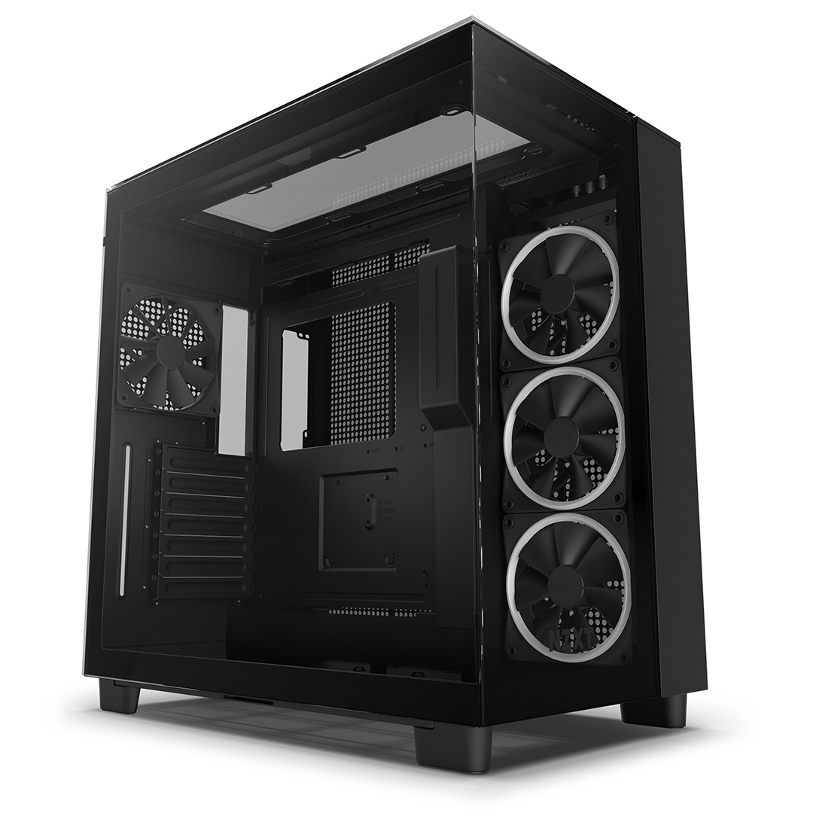

Computer Case

The Computer Case provides excellent airflow, versatile component compatibility, and a sleek design, making it perfect for building high-performance gaming or workstations.
Specifications
- Form Factor: ATX, Micro-ATX, Mini-ITX compatible.
- Material: Steel frame with tempered glass side panel.
- Cooling: Supports up to 6 fans; comes with 3 pre-installed RGB fans.
- Dimensions: 450mm (H) x 220mm (W) x 450mm (D).
- Drive Bays: 2 x 3.5" HDD bays, 2 x 2.5" SSD bays.
- Expansion Slots: 7 PCIe slots for GPUs and expansion cards.
- Front I/O Ports: 2 x USB 3.0, 1 x USB-C, Audio/Mic jacks, Power and Reset buttons.
- Motherboard Support: ATX, Micro-ATX, Mini-ITX.
- PSU Support: Bottom-mounted PSU (up to 220mm in length).
- Cooling Compatibility: Supports up to 360mm radiator for liquid cooling.
- Dust Filters: Removable top, front, and bottom dust filters for easy cleaning.
- Weight: 6.5kg.
- Additional Features: RGB lighting control, cable management system.
Back to Products